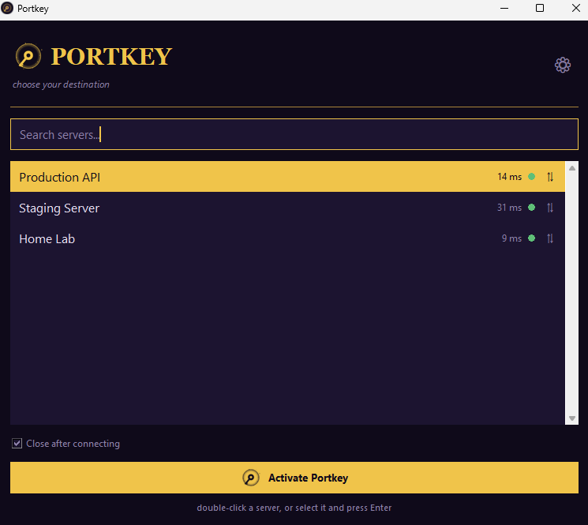
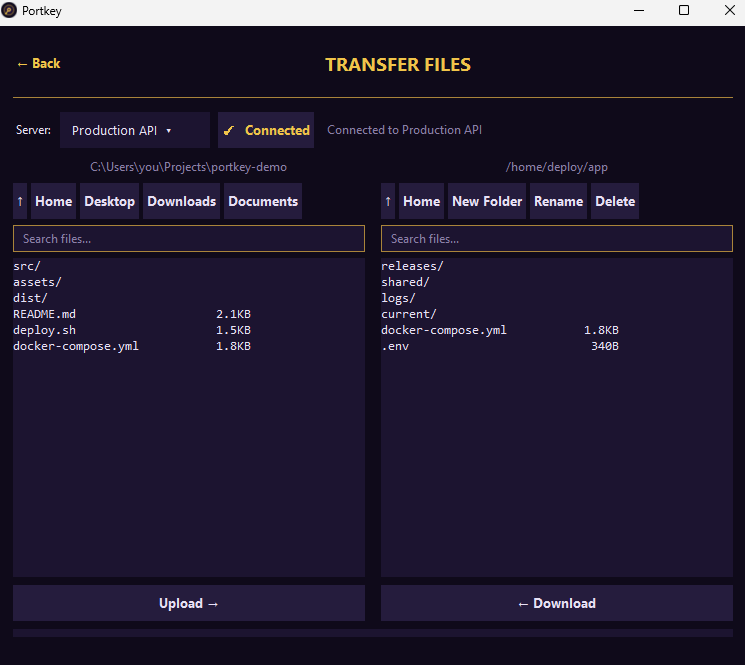

Portkey
Touch a server, arrive instantly. SSH and SFTP for your VPS fleet, without a single command to remember.
Download for Windows

⌁
One click to connect
Save a server once — name, host, user, key — then double-click to open it in Windows Terminal. No typing SSH flags.
⇅
Dual-pane file transfer
Drag and drop between local and remote. Multi-select uploads and downloads, rename, delete, new folder — all in one view.
●
Know what's reachable
A live status dot on every server tells you at a glance what's up and what isn't, before you try to connect.
◆
Stays on your machine
No account, no cloud sync, no telemetry. Your server list and private keys never leave your computer.
Requires Windows 10 or 11, the OpenSSH client (ssh.exe, usually preinstalled), and Windows Terminal (wt.exe, preinstalled on Windows 11).